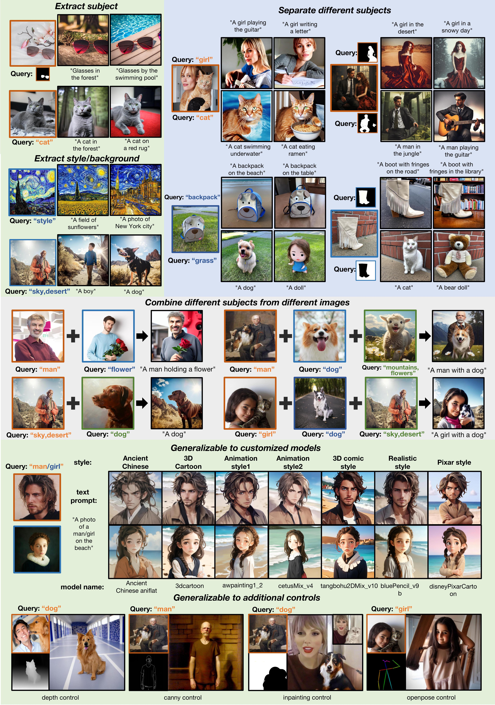

SSR-Encoder: Encoding Selective Subject Representation for Subject-Driven Generation
Shanghai Jiao Tong University, Xiaohongshu Inc., Beijing University of Posts And Telecommunications, Carnegie Mellon University, ShanghaiTech University

Recent advancements in subject-driven image generation have led to zero-shot generation, yet precise selection and focus on crucial subject representations remain challenging. Addressing this, we introduce the SSR-Encoder, a novel architecture designed for selectively capturing any subject from single or multiple reference images. It responds to various query modalities including text and masks, without necessitating test-time fine-tuning. The SSR-Encoder combines a Token-to-Patch Aligner that aligns query inputs with image patches and a Detail-Preserving Subject Encoder for extracting and preserving fine features of the subjects, thereby generating subject embeddings. These embeddings, used in conjunction with original text embeddings, condition the generation process. Characterized by its model generalizability and efficiency, the SSR-Encoder adapts to a range of custom models and control modules. Enhanced by the Embedding Consistency Regularization Loss for improved training, our extensive experiments demonstrate its effectiveness in versatile and high-quality image generation, indicating its broad applicability.
Recent advancements in image generation, especially with the advent of text-to-image diffusion models trained on extensive datasets, have revolutionized this field. A prime example is Stable Diffusion, an open-source model, which allows a broad user base to easily generate images from textual prompts. A growing area of interest that has emerged is the subject-driven generation, where the focus shifts from creating a generic subject, like ``a cat'' to generating a specific instance, such as ``the cat''. However, crafting the perfect text prompt to generate the desired subject content poses a significant challenge. Consequently, researchers are exploring various strategies for effective subject-driven generation. Subject-driven image generation aims to learn subjects from reference images and generate images aligning with specific concepts like identity and style. Currently, one prominent approach involves test-time fine-tuning, which, while efficient, requires substantial computational resources to learn each new subject. Another approach encodes the reference image into an image embedding to bypass the fine-tuning cost. However, these encoder-based models typically require joint training with the base diffusion model, limiting their generalizability. A concurrent work, IP-adapter, tackles both fine-tuning costs and generalizability by learning a projection to inject image information into the U-Net, avoiding the need to fine-tune the base text-to-image model, thereby broadening its application in personalized models. Despite these advancements, a critical aspect often overlooked is the extraction of the most informative representation of a subject. With images being a complex mixture of subjects, backgrounds, and styles, it's vital to focus on the most crucial elements to represent a subject effectively. To address this, we introduce the SSR-Encoder, an image encoder that generates Selective Subject Representations for subject-driven image generation.
Selective subject-driven image generation aims to generate target subjects in a reference image with high fidelity and creative editability, guided by the user's specific queries (text or mask). To tackle this, we propose our SSR-Encoder, a specialized framework designed to integrate with any custom diffusion model without necessitating test-time fine-tuning. Given a query text-image pair, the SSR-Encoder employs a token-to-patch aligner to highlight the selective regions in the reference image by the query. Meanwhile, it extracts fine-grained details of the subject through the detail-preserving subject encoder, projecting multi-scale visual embeddings via the token-to-patch aligner. Then, we adopt subject-conditioned generation to generate specific subjects with high fidelity and creative editability.

Results of SSR-Encoder in different generative capabilities. Our method supports two query modalities and is adaptable for a variety of tasks, including single- and multi-subject conditioned generation. Its versatility extends to integration with other customized models and compatibility with off-the-shelf ControlNets.
Visualization of attention maps \(A_{t2p}\) in SSR-Encoder.
Select different subject from a single image for re-contextualization.

Despite the SSR-Encoder not being trained in domain-specific settings (such as human faces), it is already capable of capturing the intricate details of the subjects. We utilize face images from the OpenImages dataset as reference images for generating human images. To better illustrate our results, we also employ images of two celebrities as references.

Our SSR-Encoder is not only versatile enough to adapt to various custom models and controllability modules, but it can also be effectively applied to video generation, integrating seamlessly with video generation models. We demonstrate the impact of combining our SSR-Encoder with Animatediff. Despite not being trained on video data, our method can flawlessly combine with Animatediff to produce videos that maintain consistent character identities with reference images.

To be appeared.